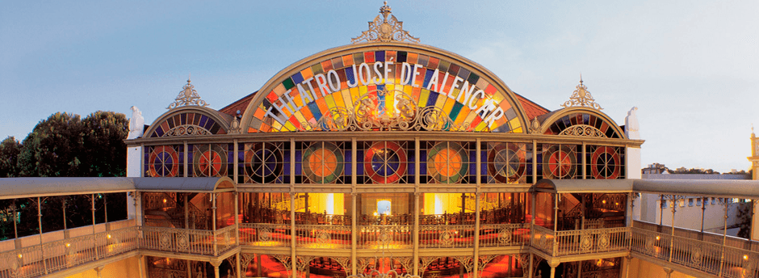

Pensando em um lugar lindo, paradisíaco, quente e com uma culinária de fazer até o mais exigente paladar ficar babando?
Praia de Iracema
A Praia de Iracema, na orla urbana de Fortaleza, é uma das principais praias da cidade.
Ela tem uma parte aterrada, é muito conhecida por abrigar grandes eventos, fica em uma região próxima do centro da cidade e
próxima de casas noturnas. Nessa região ficam pontos de interesse como a Estátua de Iracema, o Espigão, que tem uma vista
bonita de Fortaleza, e a Ponte dos Ingleses.
Parte da praia é usada por surfistas por ter ondas um pouco mais agitadas e esse é um excelente lugar para passar o fim de
tarde e curtir o pôr do sol. Para tirar boas fotos, recomendamos visitar o Espigão da Praia de Iracema, que realmente oferece
uma paisagem muito bonita da orla.
Beach Park

O Beach Park nasceu em 1985, a partir de restaurante à beira da praia. O seu primeiro brinquedo aquático foi inaugurado em 1988 e,
no ano seguinte, foi inaugurado seu parque aquático, com três toboáguas. Ainda em 1989, a área da praia ganhou novas atrações, com o Portal
da Praia, o Museu da Jangada, o Caminho de Garrafas, o Largo do Peixe, a Cascata da Sereia, além de outras esculturas.
Os brinquedos são divididos em três níveis: Radical, Moderado e Toda Família, ou seja, diversão para todas as idades.
Theatro José de Alencar

O Theatro José de Alencar é um dos lugares que você não pode deixar de conhecer em Fortaleza!
Aposta certa para os amantes do turismo cultural, o teatro oferece diversos espetáculos emocionantes para o público.
A dica é aproveitar para realizar uma visita guiada para conhecer a história desse patrimônio tão importante para a
capital cearense.
Com uma arquitetura de tirar o fôlego, atrações culturais surpreendentes e muita riqueza de detalhes, não vão faltar ideias
para fazer os seus registros fotográficos da viagem!
Avenida Beira Mar
A Avenida Beira Mar concentra diversas atrações em seus quilômetros de extensão e é o local perfeito para passar um dia ao
ar livre com vista para o mar.
Uma dica interessante é andar de bicicleta durante a tarde e aproveitar a noite na Feira de Artesanato, que ocorre no calçadão da
Avenida Beira Mar na Praia de Meireles.
Não é à toa que esse é um dos melhores lugares para ir em Fortaleza: lá você encontra uma variedade
de produtos como bolsas, roupas e
acessórios, além de opções de comidas.